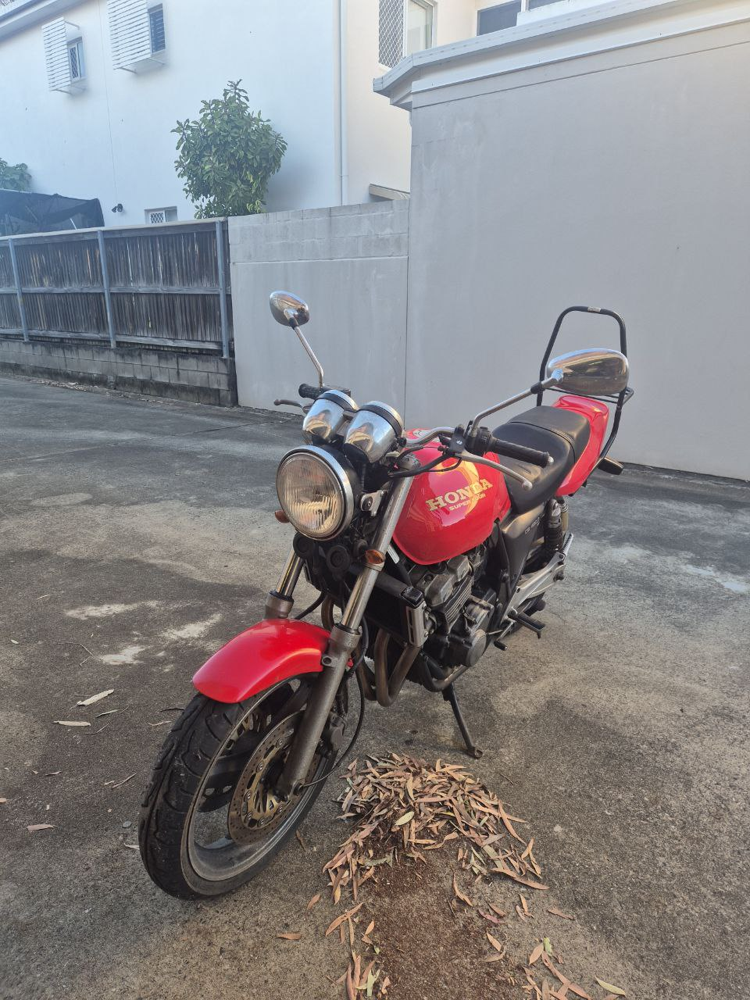
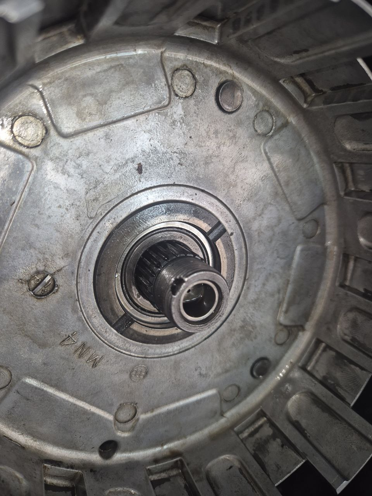
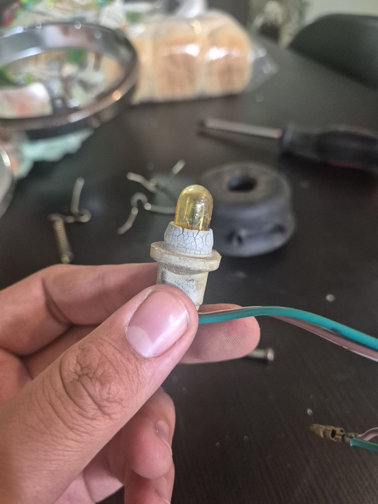
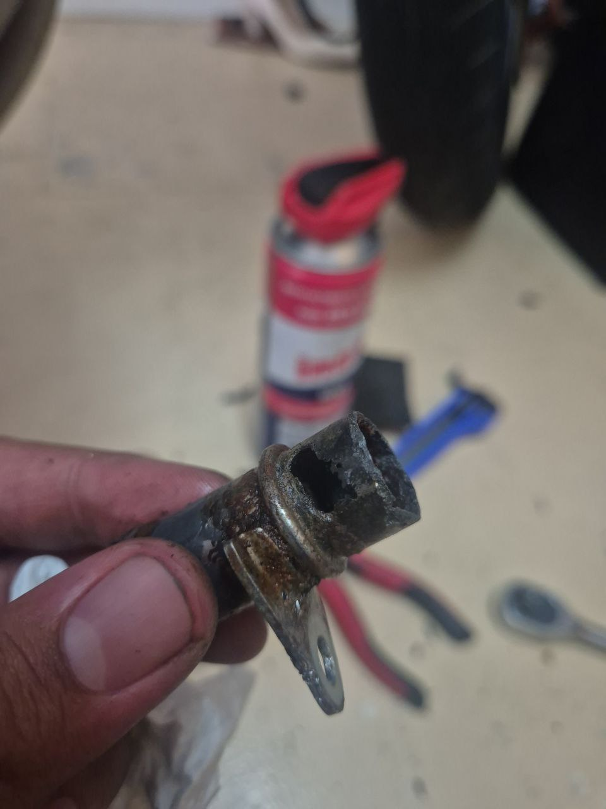
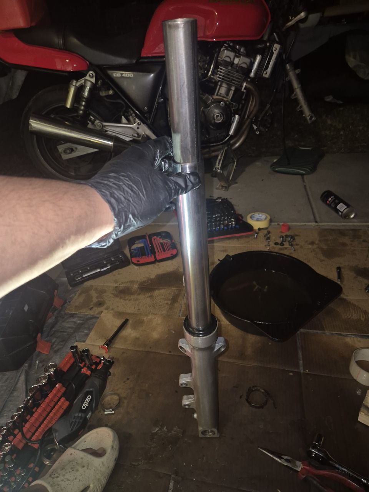
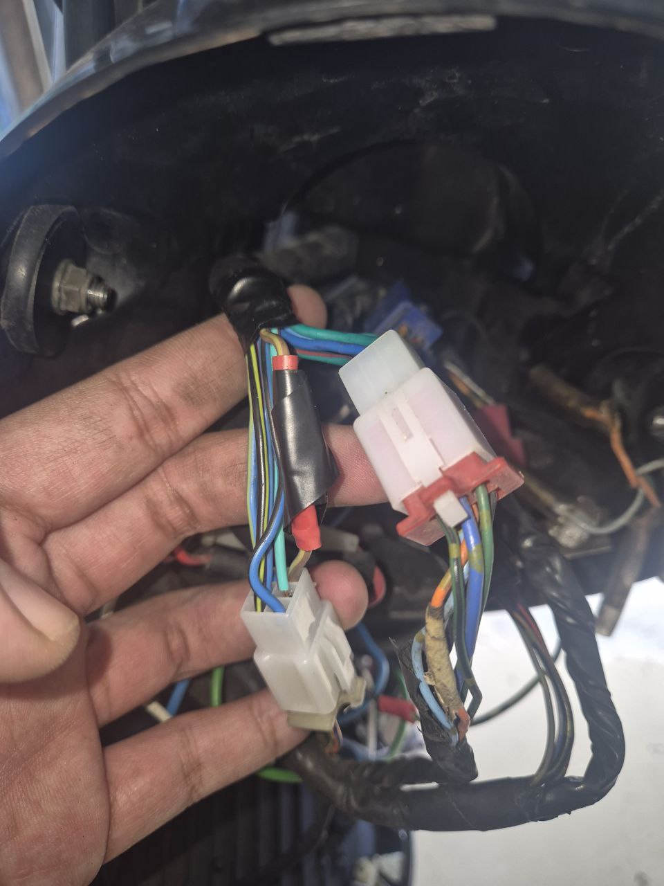

The initial condition of the bike when I purchased it.
Restored a 1992 CB400SF (NC31) Motorcycle
Motorcycle was non-starting and sitting for 7 years. The clutch was disassembled, forks leaking oil, tyres worn and hard, chains and sprockets worn, hand grips and foot peg grips hard and slippery, coolant loop corroded and leaking,
spark plugs worn, throttle and clutch wires rough and sticking and lighting and horn wires corroded.
I repaired and restored each of these issues myself from zero experience. I also wired a LED headlight and wireless charger using a multimeter and wiring diagram.

The initial condition of the bike when I purchased it.

The disassembled clutch I had to rebuild.

One of the many worn rubber based parts I had to source and replace.

Removed the carburetors to locate the source of the coolant leak.

The corroded fork seal I had to cut out.

The wiring harness which I spliced into.
Video Playlist of Motorcycle Updates (Playlist)